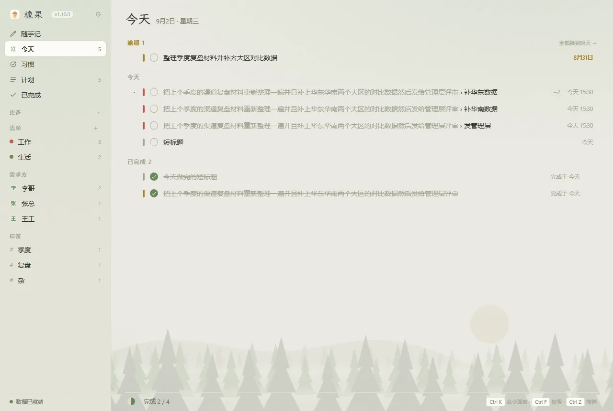
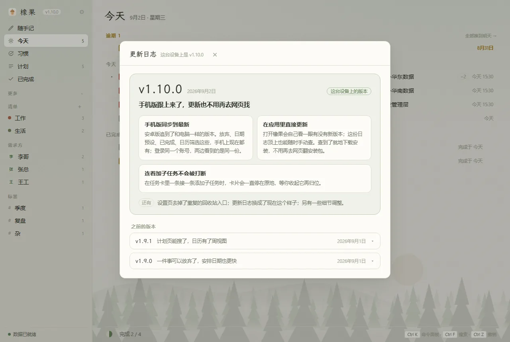
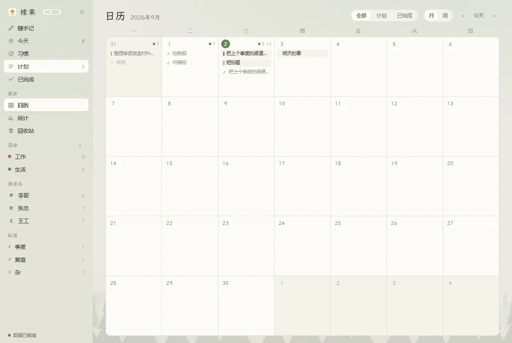
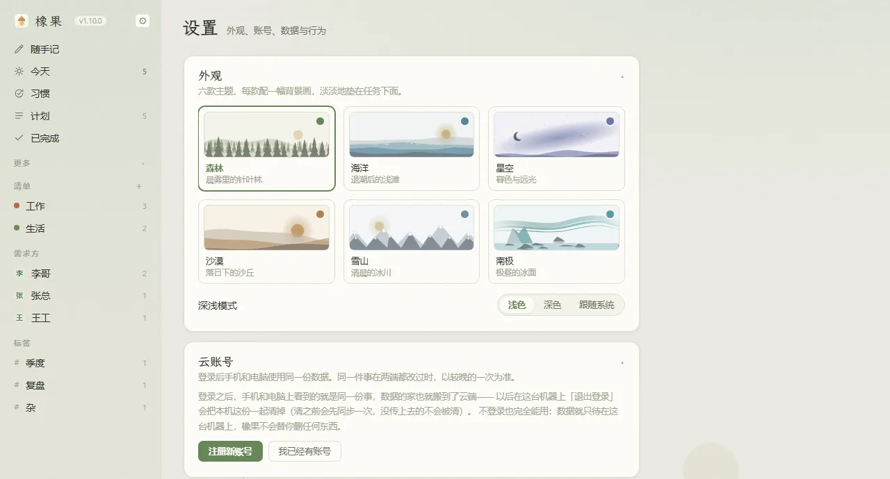

下面这些是橡果每天真正在替你干的事。
不用先选日期、再选清单、再点重要性。把话打完就行：
/清单 · #标签 · @需求方 · !高边打边显示解析出来的结果，不对当场改。
橡果把「为谁做」当成和日期、清单同一级的东西。侧栏按人分栏，点开某个人就是欠他的全部事情；统计里也各算各的。
如果你的事大多是别人交办的，按人看比按重要性排更管用。
喝水、背单词、健身这类重复着做的事，有自己的一屏：一个大圈点一下就是打卡，旁边是连续多少次和本周七格，点开能看整月日历。
习惯不会逾期。昨天没做就是没做，不会滚成一笔债堵在今天。忘了打卡可以补，「每周一三五」这种也数得对——连续三次数的是该做的日子，不是自然日。
一周内 / 一个月内 / 半年内 / 更远。不用在一条长列表里翻哪件是这周要交的。
换一个看法，就变成按重要性分成高 / 中 / 低 / 普通四段，每段里再按时间排。
一件事还剩几个子任务没做，列表里就占几行（「写周报 › 画趋势图」），母任务先收起来，全做完了它才回来收尾。
子任务没单独填日期和重要性时就等于母任务的：母任务定在周五，它的子任务周五当天自己出现在「今天」。
点开任何一件事，底下那栏已经写好了它的完整一句话。删掉「!高」就降级，删掉「@李哥」就把人摘了，旁边一个按钮随时还原。
一个邮箱就能跨设备。新装的设备登录后直接拿到云端那份；这台设备上已经记了事的话，登录时会问你是把两边合起来还是用云端那份。同一件事两边都改过，以改得晚的那次为准。
断网、服务器出问题都不影响你继续用，本机那份照常读写。不注册的话跟以前完全一样，一个字都不会往外传。
登录之后，退出登录会把这台设备上的数据一起清掉，只留云端那一份——清之前橡果会先跟服务器对一次账，没对上就一条都不清。
默认存在本机，装完就能用。想让数据跟着移动硬盘走，去设置里换个文件夹就行。
保存时先写好副本再替换，写到一半断电也不会碰坏原来那份；每天留一份备份共 30 份，删掉的东西在回收站里放 30 天，日常的每一步操作都能撤销。
唯一不能撤销的是设置里那两个明确写着「会覆盖 / 会清空」的动作，点之前会让你确认。
森林的针叶林、海洋的浪、星空的银河、沙漠的落日沙丘、雪山的冰川、南极的极光，淡淡地垫在任务下面。每款都有深浅两色。
CtrlK 命令面板，AltSpace 在任何地方叫出随手记。
任务右键：完成、推明天、改日期、改重要性、移清单、换人、复制、删除。
拖到侧栏「今天」就是改今天，拖到某个人名下就是改需求方。
真机截图，里面的任务是演示数据。




随便打，认得出来的部分会变成对应的字段，剩下的就是任务标题。不想记这套写法，输入框下面就是一排按钮。
| 你打的 | 它记下的 |
|---|---|
| 明天 / 下周三 / 8月20日 / 十月底之前 | 到期日 |
| 下午3点 / 晚上八点 | 具体时间，到点弹系统通知 |
| 每天 / 每周一三五 / 每月10号 | 循环，做完自动生成下一次 |
/工作 | 归到「工作」清单，没有这个清单会自动建 |
#汇报 | 打上「汇报」标签 |
@李哥 | 需求方是李哥，一件事可以挂好几个人 |
!高 / ！！！ | 重要性（全角半角都认） |
周五下午3点 提交周报 /工作 #汇报 @李哥 !高
输入时已有的清单、标签、需求方会自动补全，不用怕打错名字建出重复的一份。
手不离键盘的那一套。
| 快捷键 | 操作 |
|---|---|
| AltSpace | 在任何地方叫出「随手记一条」小窗（可改成别的键） |
| CtrlK | 命令面板 |
| CtrlF | 搜索；在计划页里直接跳进计划的搜索框 |
| Ctrl1 … Ctrl5 | 随手记 / 今天 / 习惯 / 计划 / 已完成 |
| CtrlD / Ctrl→ | 完成 / 推到明天 |
| CtrlZ | 撤销，撤的是刚才那件事 |
点上面的「下载 Windows 版」，双击安装即可，装完开箱即用。
完整记录见仓库的 CHANGELOG。
手机版第一轮试用后的修整。
手机版从头做了一遍。
手机版跟上来了，更新也不用再去网页找。
计划页能搜了，日历有了周视图。
一件事可以放弃了，安排日期也更快。
侧栏重排；一件事可以用一句话改完。
手机版可以自己更新了；版本对不上时不再闷头硬来。
多了「习惯」，也第一次有了安卓版。
橡果有账号了。
/清单名 归清单（不存在自动新建）、# 打标签、@ 记需求方，输入时都有自动补全！！！ 也认重要性